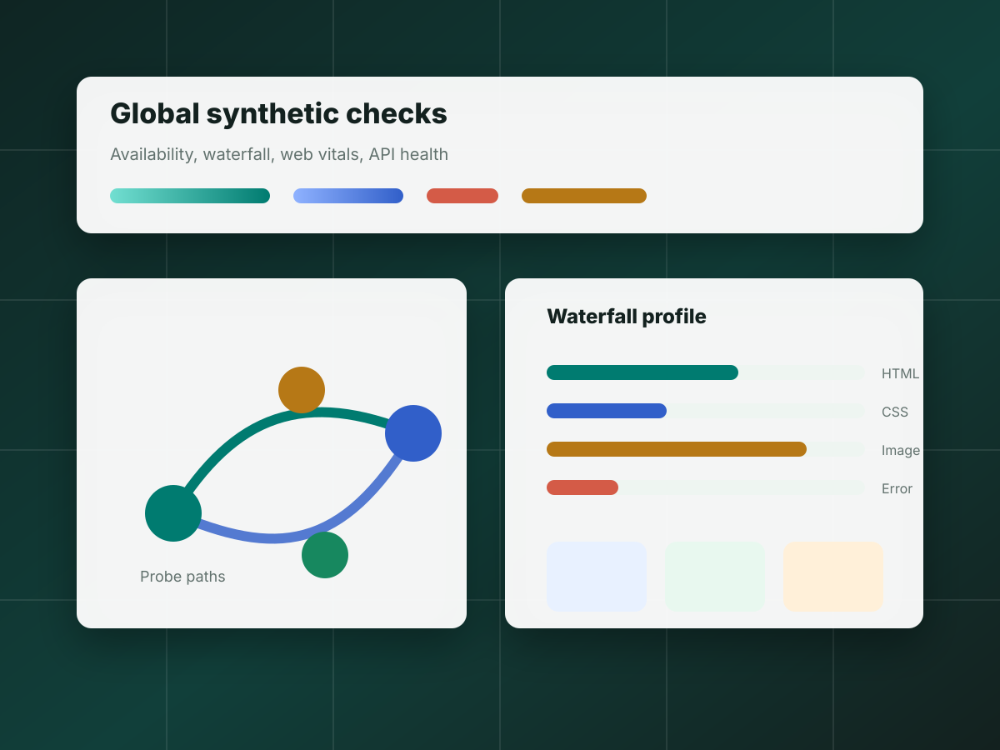

Deployment Model
This version is plain HTML, CSS, JavaScript, and static assets. GitHub Pages can serve it directly from the main branch without a build step.
Synthetic monitoring playground
A deployable demo website with separate pages for performance, network behavior, transaction flows, API failures, visual checks, and accessibility samples.

LCP-style visual target, layout shift scenario, and input delay sample.
LCP CLS Input delayWaterfall profile, resource mix, intentional missing asset, and burst mode.
Waterfall 404 asset BurstA transaction-like form flow that stores a demo result in browser storage.
Forms Storage FlowSuccessful fetch, missing JSON, console warning, and JavaScript error trigger.
Fetch Console JS errorStable visual board and a variant layout for screenshot comparison later.
Screenshot Variant LayoutClean form patterns, contrast samples, keyboard-friendly controls, and one weak contrast block.
Labels Contrast FocusThis version is plain HTML, CSS, JavaScript, and static assets. GitHub Pages can serve it directly from the main branch without a build step.
Local browser time will appear here.